이사청소
[오산 갈곶동 이사청소] 갈곶동 20평 복층, 주방 하수구 음식물 찌든때와 후드 필터 기름때까지 후기
2026. 8. 7.
오산 갈곶동에 자리한 복층 구조 주택입니다.
1층과 2층을 합쳐 20평 남짓한 공간의 이사청소를 진행하였습니다.
입주를 앞둔 집은 겉으로는 정리가 된 듯 보였습니다.
하지만 창틀과 몰딩, 수납장 안쪽, 그리고 주방 상부장과 후드 필터에는 눈에 띄지 않던 오염이 남아 있었습니다.
특히 주방 하수구에는 음식물과 쓰레기가 그대로 방치되어 있었습니다.
오늘은 방, 화장실, 수납장, 주방 이렇게 네 개의 구역을 순서대로 보여드리겠습니다.
이사청소는 단순히 눈에 보이는 먼지를 닦는 작업이 아닙니다.
새로 들어올 분이 첫날부터 안심하고 생활할 수 있도록, 손이 닿지 않는 안쪽과 위생이 걸린 곳까지 다뤄야 하는 일입니다.
특히 이 현장은 주방 하수구의 음식물 오염처럼 냄새와 벌레로 이어질 수 있는 부분이 남아 있었습니다.
그래서 저희 BG솔루션 팀은 세척뿐 아니라 고온스팀살균과 방역까지 함께 계획하였습니다.
오늘은 그 현장을 공개합니다.
이번 현장에서 진행한 작업
- 방 : 창틀·몰딩·바닥 먼지 제거 및 고온스팀살균
- 화장실 : 타일·변기·세면대 물때 세척 및 수전 발수코팅
- 수납장 : 선반 안쪽 손자국·얼룩 제거 및 피톤치드 마감
- 주방 : 상부장·후드 필터 기름때 세척 및 하수구 음식물 처리, 방역
이사청소는 빈집일 때만 손댈 수 있는 곳이 많습니다.
가구가 들어오면 창틀 안쪽도, 수납장 뒤편도 다시 열어보기 어렵습니다.
지금 제대로 잡아두지 않으면 냄새와 벌레, 곰팡이가 생활 중에 뒤늦게 드러납니다.
그래서 사람이 살기 직전인 이 시점의 청소가 중요합니다.
방 — 경사진 천장 아래 창틀과 몰딩에 내려앉은 먼지
복층 구조 특유의 경사진 천장 아래 방입니다.
창틀과 걸레받이 몰딩, 바닥 이음새를 따라 먼지가 내려앉아 있었습니다.
바닥 톤도 전체적으로 어둡게 가라앉아 보였습니다.
before
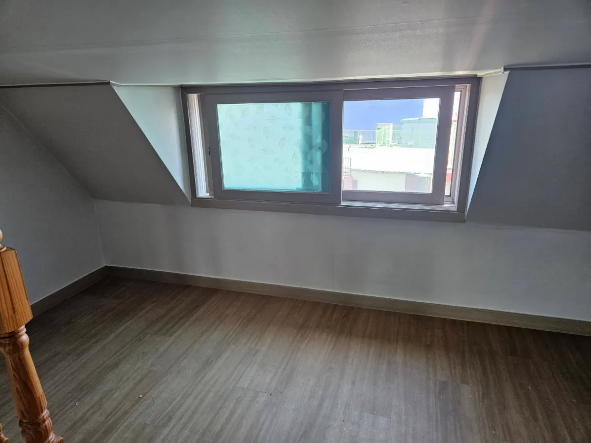
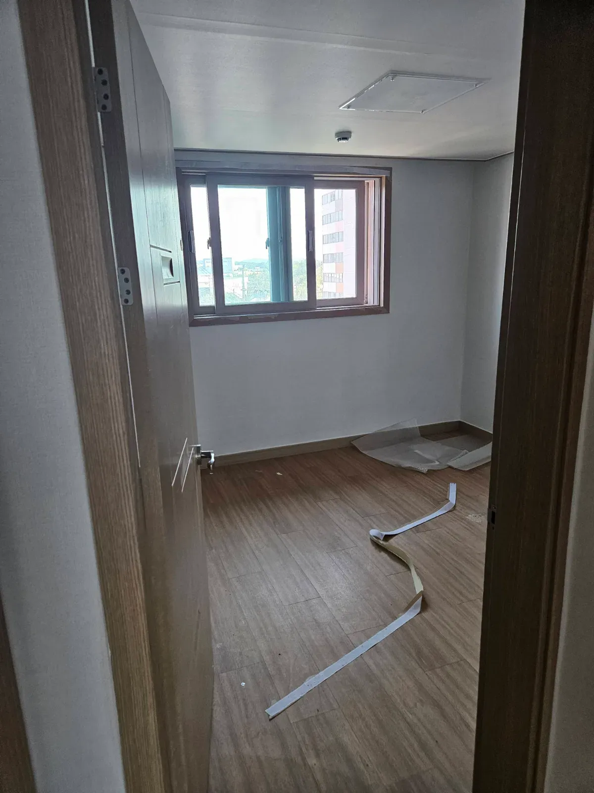
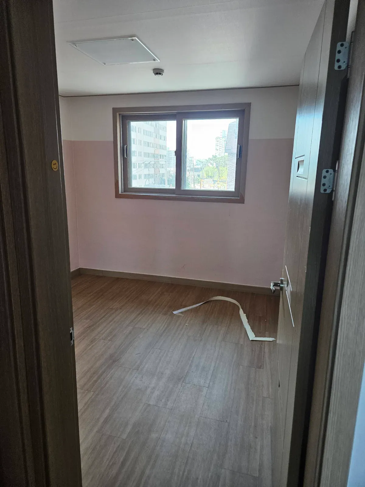
왜 이렇게 됐을까요?
경사진 천장과 창틀은 손이 잘 닿지 않아 청소에서 자주 빠지는 자리입니다.
창을 여닫는 동안 바깥 먼지가 창틀 홈에 계속 쌓입니다.
걸레받이 아래는 청소기가 훑고 지나가도 미세한 먼지가 그대로 남습니다.
시간이 지나면서 이런 먼지가 방 전체를 흐릿하게 보이게 만듭니다.
물걸레로 한 번 훑는 정도로는 창틀 홈과 몰딩 이음새의 먼지가 빠지지 않습니다.
저희 BG솔루션 팀은 창틀과 레일 홈을 먼저 진공으로 빨아들인 뒤 세밀하게 닦아냈습니다.
걸레받이와 바닥 이음새는 결을 따라 다시 훑어냈습니다.
마무리로 고온스팀살균을 진행해 육안으로 보이지 않는 부분까지 다뤘습니다.
after

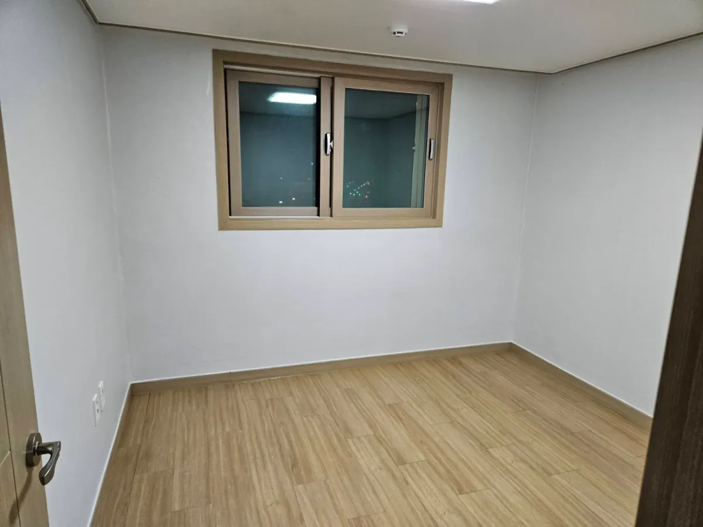
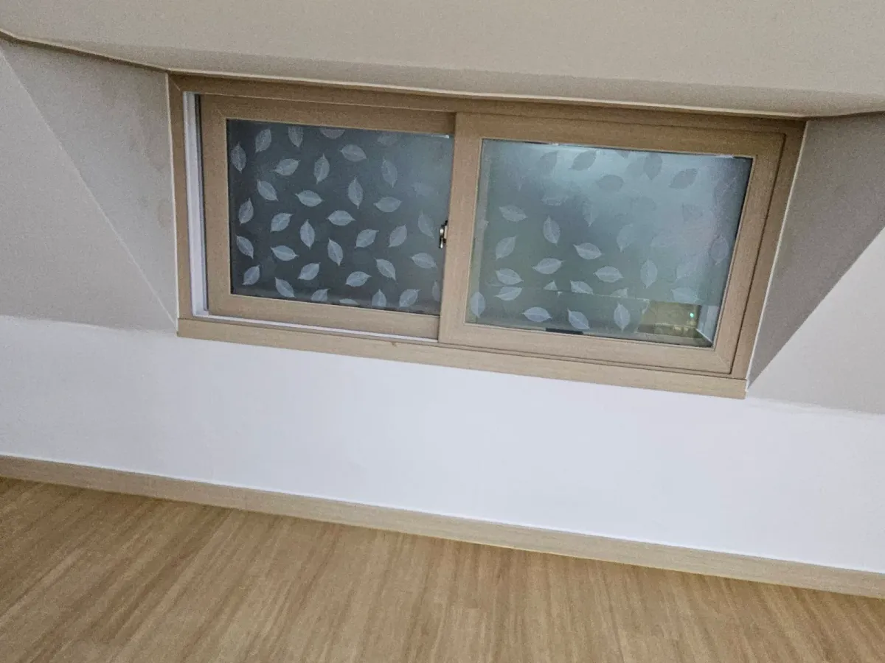
작업 전과 후를 비교해 보시면, 흐릿하게 가라앉았던 방이 한 톤 밝아진 것을 느끼실 수 있습니다.
창틀 홈을 손으로 쓸어도 먼지가 묻어나지 않았습니다.
화장실 — 타일과 바닥 줄눈, 변기 아래 남은 물때 자국
세면대 아래 타일과 바닥 줄눈을 따라 누런 물때 자국이 보였습니다.
변기 하단과 벽 타일 이음새에도 얼룩이 남아 있었습니다.
before

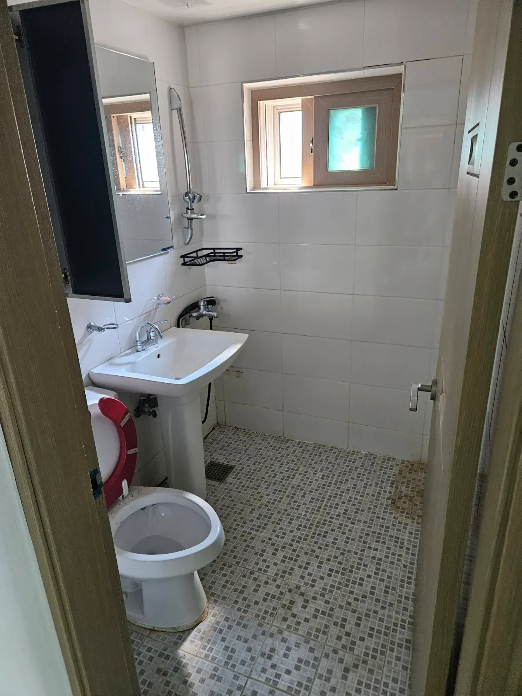
왜 이렇게 됐을까요?
화장실은 늘 물기가 있어 미네랄 성분이 마르면서 물때로 굳습니다.
타일 줄눈은 표면이 거칠어 이 물때가 더 깊게 파고듭니다.
변기 하단처럼 손이 잘 안 가는 곳은 청소 때마다 밀리기 쉽습니다.
그렇게 오래 방치되면 일반 세제로는 잘 지워지지 않는 자국으로 남습니다.
수세미로 문지르는 것만으로는 줄눈 속에 박힌 물때가 빠지지 않습니다.
저희 BG솔루션 팀은 타일과 줄눈에 전용 세제를 도포해 물때를 불린 뒤 세척하였습니다.
변기와 세면대는 하단과 이음새까지 빠짐없이 닦았습니다.
마지막으로 수전에는 발수코팅을 입혀 물방울이 맺히지 않고 흘러내리도록 마감하였습니다.
after
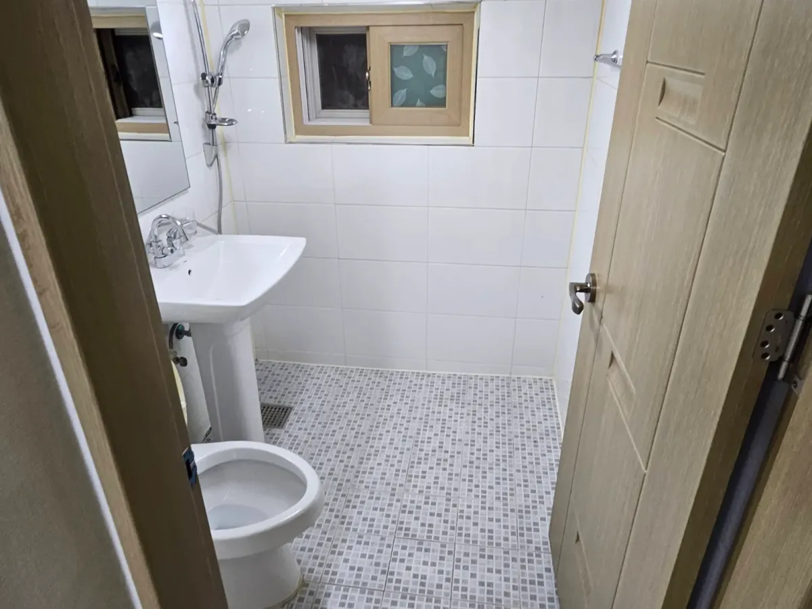
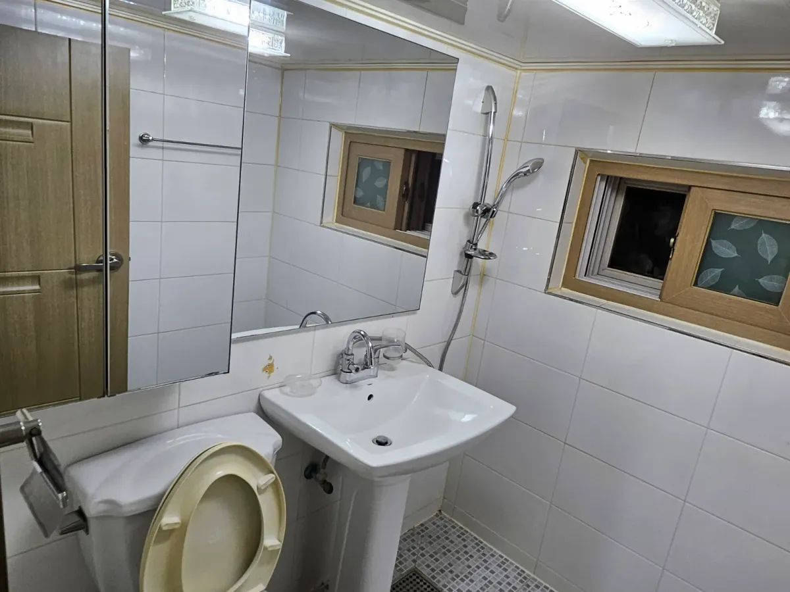
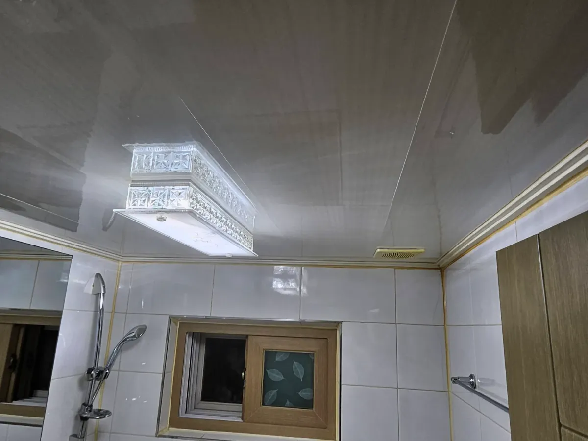
작업 후 타일이 본래의 흰 톤을 되찾았습니다.
수전은 물기를 튕겨내며 반짝이는 광택이 돌았습니다.
수납장 — 선반 안쪽에 번진 손자국과 얼룩
붙박이 수납장 문을 열자 선반 안쪽으로 거뭇한 손자국과 얼룩이 번져 있었습니다.
선반 상판과 안쪽 벽면에 뿌옇게 흐린 자국이 남아 있었습니다.
before
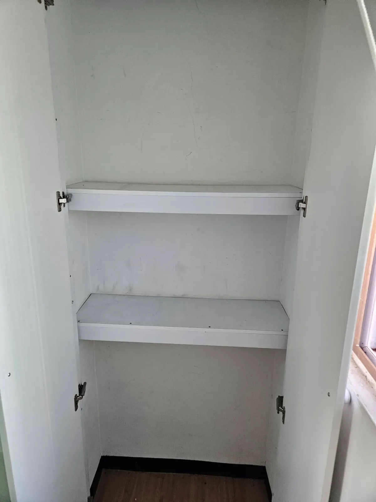
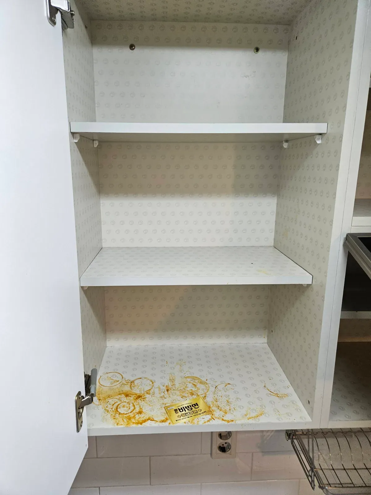
왜 이렇게 됐을까요?
수납장 안쪽은 문을 닫아두는 공간이라 청소에서 가장 먼저 빠지는 자리입니다.
물건을 넣고 빼는 동안 손자국과 먼지가 계속 쌓입니다.
습기가 갇히면 얼룩이 그대로 눌어붙습니다.
그래서 겉은 멀쩡해 보여도 문을 열면 안쪽만 유독 지저분한 경우가 많습니다.
마른 걸레로 훑기만 하면 얼룩이 번지기만 할 뿐 깨끗해지지 않습니다.
저희 BG솔루션 팀은 선반을 한 칸씩 나눠 상판과 안쪽 벽면까지 닦아냈습니다.
손자국과 얼룩은 세제로 풀어 여러 번 닦아 걷어냈습니다.
마무리로 피톤치드를 뿌려 안쪽 공기까지 정리하였습니다.
after

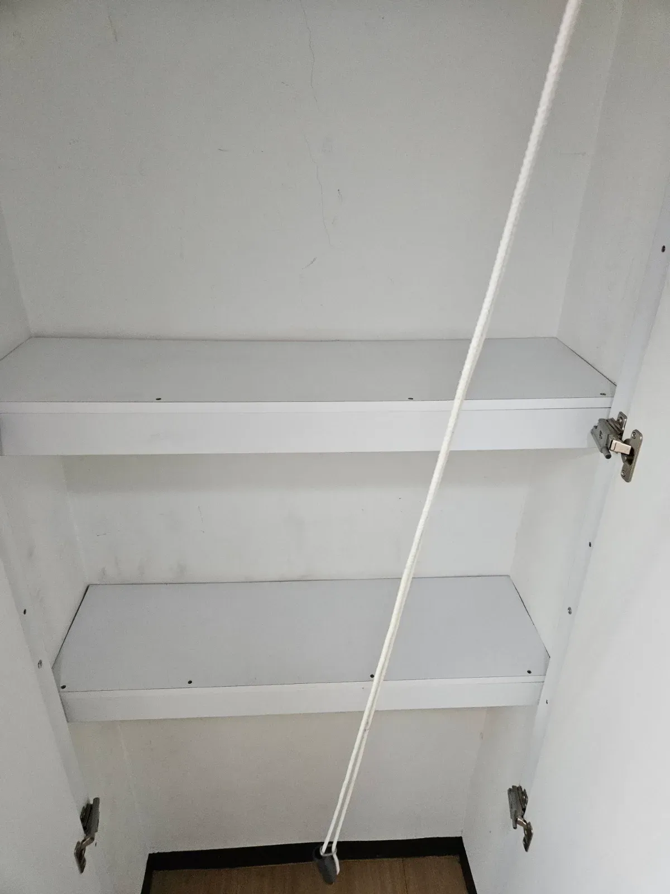
작업 전과 후를 비교해 보시면 뿌옇던 선반이 뽀득하게 정리된 것을 확인하실 수 있습니다.
문을 열었을 때 은은한 향이 남았습니다.
주방 — 상부장 안쪽 곰팡이 자국과 후드 필터에 엉킨 기름때, 그리고 음식물 찬 하수구
상부장 안쪽 모서리에 거뭇한 곰팡이 자국이 번져 있었습니다.
후드 필터에는 기름때가 촘촘히 엉켜 있었습니다.
하수구에는 음식물과 쓰레기가 그대로 남아 있었습니다.
before
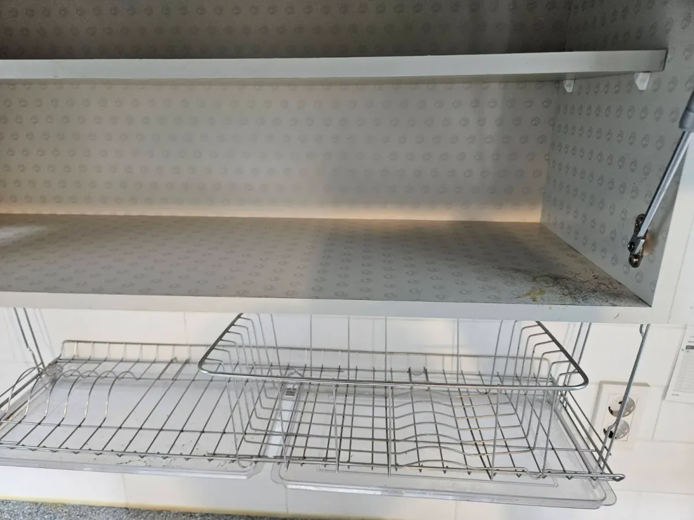
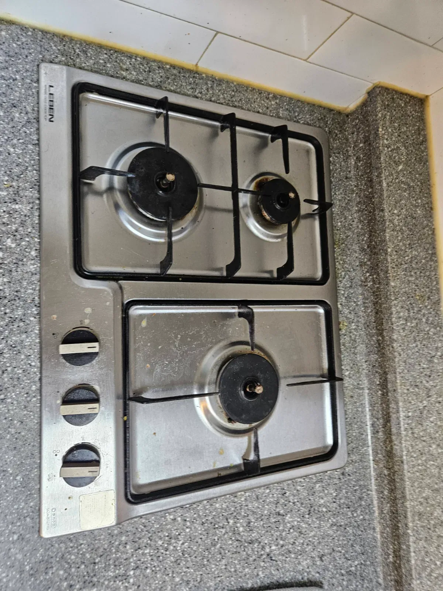
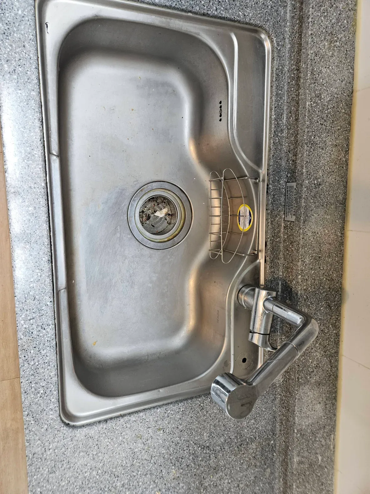
왜 이렇게 됐을까요?
조리할 때 생기는 기름 연기가 후드 필터 그물망에 계속 달라붙습니다.
상부장 안쪽은 습기와 열기가 갇혀 곰팡이가 피기 쉬운 자리입니다.
하수구에 음식물이 방치되면 냄새와 벌레로 바로 이어집니다.
이렇게 쌓인 오염은 다음 사람이 그대로 떠안게 됩니다.
세제만 뿌려 닦아서는 후드 필터 그물망 사이에 낀 기름때가 빠지지 않습니다.
저희 BG솔루션 팀은 후드 필터를 분리해 기름때를 녹여 그물망 안쪽까지 세척하였습니다.
상부장 곰팡이 자국은 세척 후 고온스팀살균으로 마무리하였습니다.
하수구의 음식물과 쓰레기는 걷어낸 뒤 세척하고, 방역뿌레와 벌레퇴치 작업으로 냄새와 벌레의 원인까지 눌렀습니다.
after
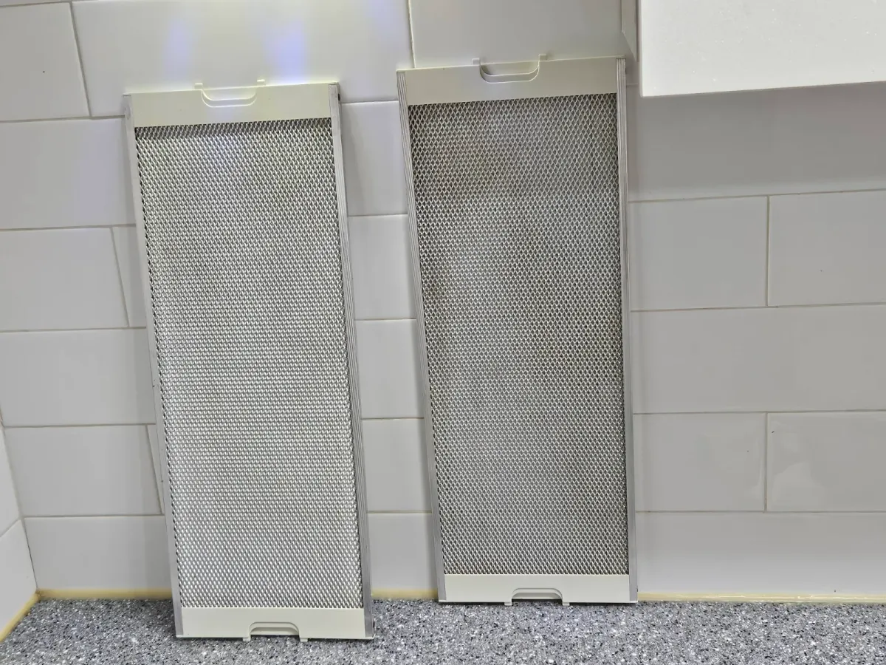
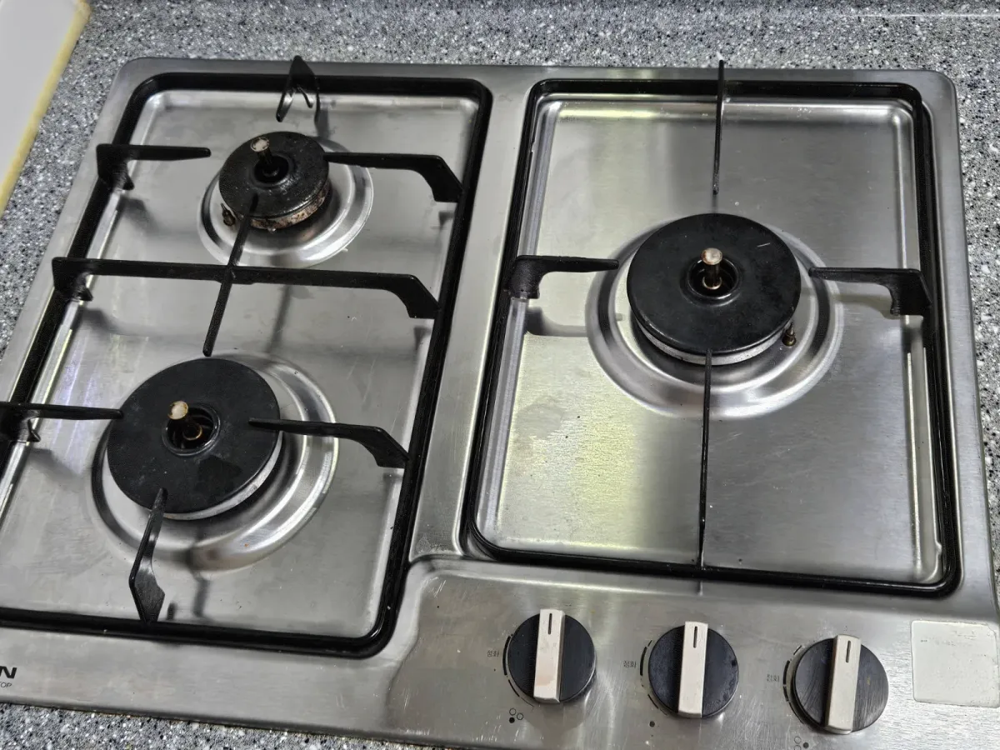
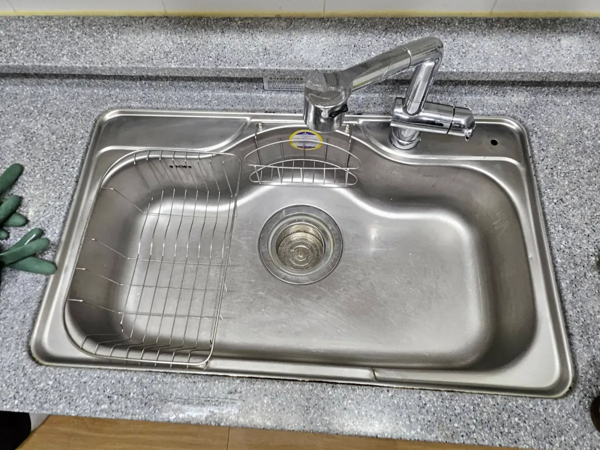
작업 전과 후를 비교해 보시면 그물망이 훤히 비쳐 보일 만큼 후드 필터가 깨끗해진 것을 확인하실 수 있습니다.
하수구 쪽 냄새가 잦아들었습니다.
마무리
오산 갈곶동 복층 20평 현장의 방, 화장실, 수납장, 주방을 순서대로 마무리하였습니다.
창틀 먼지부터 후드 필터 기름때, 하수구 음식물까지 손이 닿지 않던 곳을 다뤘습니다.
이사청소는 빈집일 때만 잡을 수 있는 곳이 많습니다.
지금 제대로 다뤄두면 새로 들어오는 분이 첫날부터 안심하고 지낼 수 있습니다.
오산 지역 이사청소가 필요하시면 언제든 BG솔루션으로 문의 주시기 바랍니다.
현장을 직접 확인하고 정직하게 작업하겠습니다.
보이지 않는 곳까지 책임지는 청소.
BG솔루션이 그 현장을 만듭니다.